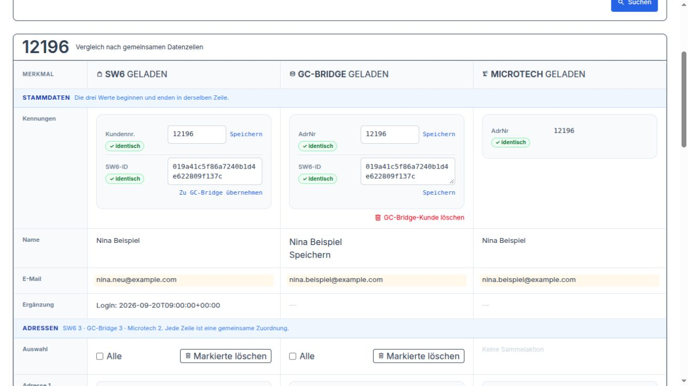
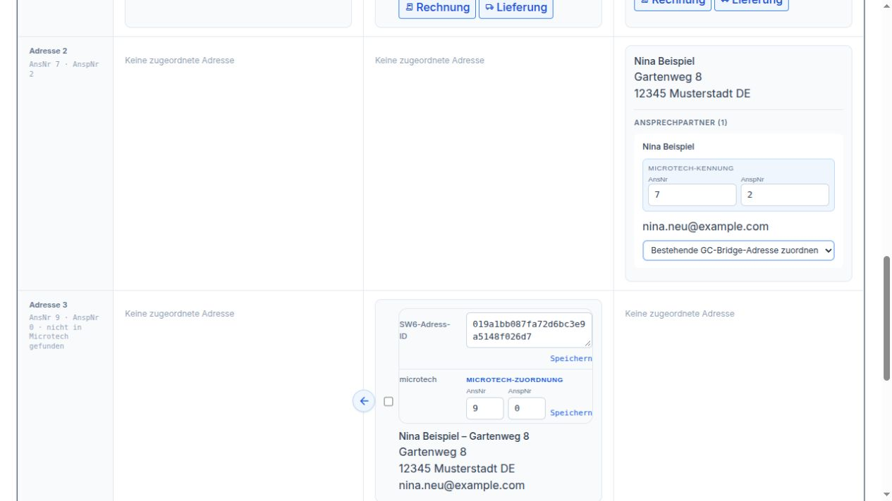
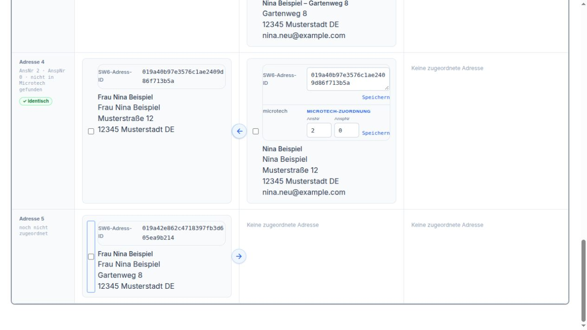
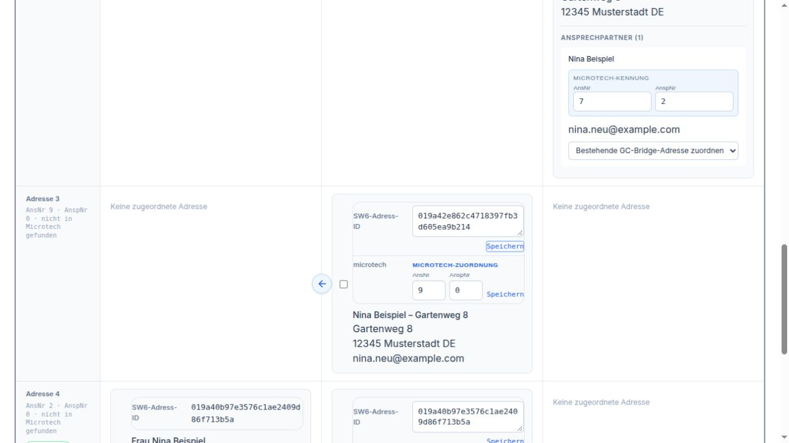
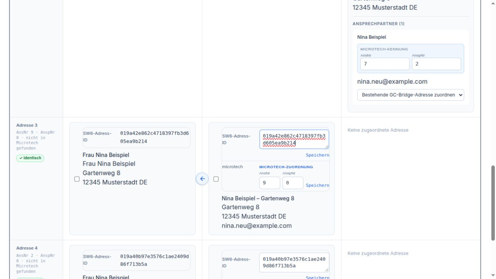
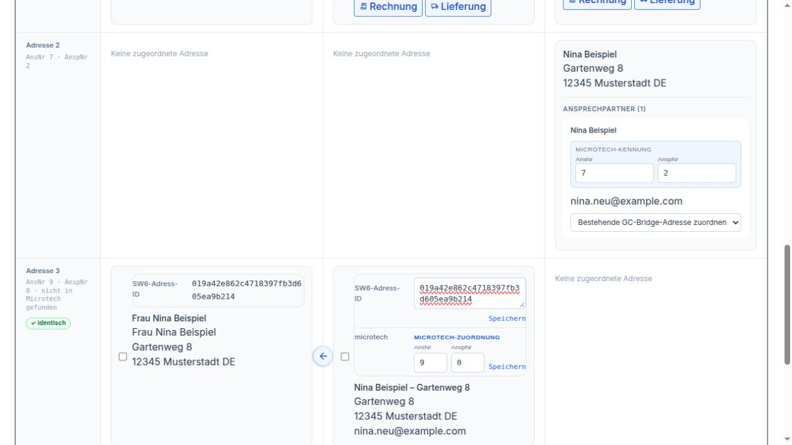
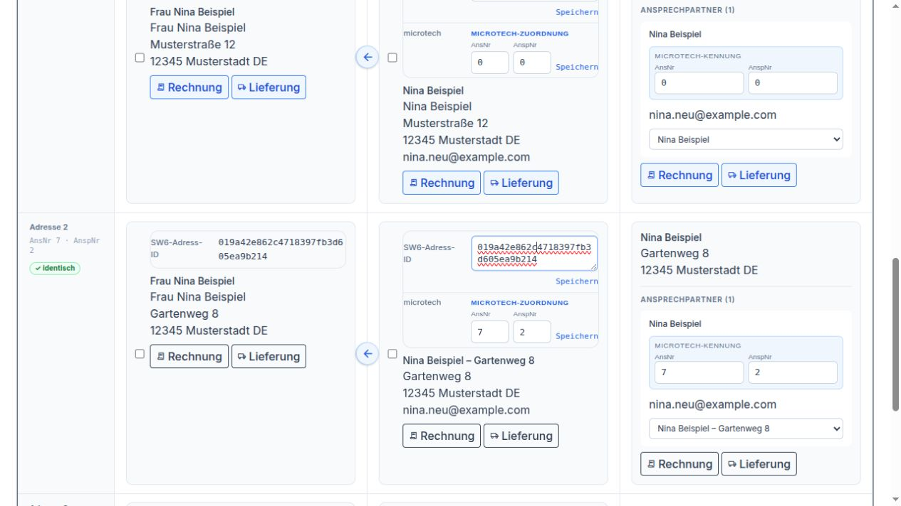

Kunden¶
Kunden zusammenführen¶
Unser Beispiel: Nina Beispiel ist bereits Kundin unter der Nummer 12196. Sie meldet sich im Shop noch einmal an und erhält die Nummer 950059. Nun gibt es zwei Kundenkonten für dieselbe Person. Wir möchten mit 12196 weiterarbeiten und die Bestellungen und die Adresse von 950059 dorthin übernehmen.
Nina wohnt in der Musterstraße 12. Ihre Pakete möchte sie künftig an den Gartenweg 8 bekommen. Wir begleiten diesen einen Fall vom Zusammenführen bis zur Prüfung der Adressen.
Die Bildschirmfotos zeigen die Bedienoberfläche mit fiktiven Beispieldaten. Nina Beispiel, ihre Anschriften und Bestellungen sind frei erfunden.
1. Beide Kunden suchen
Öffnen Sie Kunden → Kunden zusammenführen. Tragen Sie bei AdrNr / Kundennummer die beiden Nummern 12196,950059 ein. Lassen Sie die übrigen Suchfelder leer und klicken Sie auf Suchen. So werden beide Kunden nebeneinander prüfbar.

Beide Nummern stehen im selben Suchfeld, durch ein Komma getrennt.¶
Prüfen Sie die Treffer: Gehören Name, E-Mail-Adressen und Anschriften wirklich zu Nina? Zwei Menschen mit demselben Namen sollen nicht zusammengeführt werden. Wird nur noch eines der beiden Konten gefunden, prüfen Sie den verbliebenen Kunden und seine Adressen. Ein weiterer Merge ist dann für dieses Beispiel nicht nötig.
2. Festlegen, welcher Kunde bleibt
Bei Falscher Kunde – wird nach Prüfung gelöscht wählen Sie 950059. Bei Richtiger Kunde – bleibt erhalten wählen Sie 12196. Nina soll künftig unter ihrer bisherigen Nummer geführt werden. Klicken Sie anschließend auf Vorschau laden.

Links steht das zusätzliche Konto 950059, rechts der Kunde 12196, der bleibt.¶
3. Die Vorschau gemeinsam mit dem Beispiel lesen
Die Verbindliche Vorschau zeigt links das bisherige Konto 950059 und rechts das geplante Ergebnis bei 12196. In unserem Beispiel kommen eine Adresse und zwei Bestellungen hinzu. Ninas bisherige Bestellung bei 12196 bleibt ebenfalls erhalten.

Die Vorschau zeigt, was zum Kunden 12196 hinzukommt.¶
Nina hat zuletzt das neue Konto mit nina.neu@example.com benutzt. Die Vorschau zeigt deshalb diese E-Mail-Adresse als künftigen Zugang. Sie verwendet danach das dazugehörige Passwort. Ihre Kundennummer bleibt trotzdem 12196.
Unter Adressen prüfen Sie die Musterstraße 12. Sie steht in unserem Beispiel schon beim alten Kunden und auch beim neuen Konto. Nach der Zusammenführung bleiben zunächst beide Adressen erhalten. Die Vorschau entfernt gleiche Adressen nicht von selbst. Ninas bisherige Rechnungs- und Lieferadresse bei 12196 bleibt zunächst ausgewählt.

Prüfen Sie Ninas künftigen Zugang und anschließend ihre Anschriften in der Vorschau.¶
4. Bestätigen und das Ergebnis prüfen
Passt alles zu Nina, klicken Sie auf Merge bestätigen. Das Konto 950059 wird aufgelöst. Seine Adresse und seine beiden Bestellungen gehören anschließend zu 12196. Auch die GC-Bridge ordnet ihre entsprechenden Einträge dem verbliebenen Kunden zu. Ninas Kunde in Microtech wird durch diesen Schritt nicht geändert.
Warten Sie auf die Erfolgsmeldung. Erscheint stattdessen Status prüfen, benutzen Sie diese Schaltfläche und warten Sie auf ein klares Ergebnis. Starten Sie den Vorgang nicht noch einmal auf Verdacht.
Suchen Sie danach erneut nach 12196. Prüfen Sie Ninas Adressen und ihre Bestellungen. Rechnungen und Lieferanschriften bereits vorhandener Bestellungen bleiben so erhalten, wie sie damals erstellt wurden. Mit den drei Spalten prüfen wir nun, ob Nina ihre nächste Lieferung an die richtige Anschrift erhält.
Funktionen der drei Spalten¶
Wir bleiben bei Nina Beispiel, Kundennummer 12196. Ihr zusätzliches Shopkonto ist bereits zusammengeführt. Jetzt müssen wir noch dafür sorgen, dass die drei Spalten ihre vorhandenen Einträge richtig zusammen anzeigen.
Suchen Sie erneut nach 12196 und warten Sie, bis SW6, GC-Bridge und Microtech geladen sind. Links stehen Ninas Angaben im Shop, in der Mitte ihr Eintrag in der GC-Bridge und rechts ihre Angaben in Microtech. Nina möchte ihre Rechnung an die Musterstraße 12 und ihre Pakete an den Gartenweg 8 bekommen.
1. Ninas Shopkonto mit dem Eintrag in der Mitte verbinden
Die Kundennummer 12196 stimmt in unserem Beispiel schon überein. Bei SW6-ID sehen Sie aber einen Unterschied: Links steht 019a41c5f86a7240b1d4e622809f137c, in der Mitte noch die alte Kennung 019a3fbd20457395a8e067bf42d9c816. Die Anzeige „unterschiedlich“ macht darauf aufmerksam. Dieselben Namen und Kundennummern allein reichen also noch nicht aus.

Nina wird in allen drei Spalten gefunden. Die Shop-Zuordnung in der Mitte ist noch falsch.¶
Prüfen Sie zuerst, dass links wirklich Ninas verbliebenes Shopkonto steht. Klicken Sie dann links neben dessen SW6-ID auf Zu GC-Bridge übernehmen. Der Knopf übernimmt die Kennung dieses Shopkontos in Ninas GC-Bridge-Eintrag. Ihre Kundennummer und die Kennung im Shop bleiben dabei unverändert.


Links und in der Mitte steht jetzt die Kennung des richtigen Shopkontos.¶
2. Den Gartenweg 8 in den getrennten Zeilen wiederfinden
Gehen Sie nun zu den Adressen. Ninas Gartenweg 8 ist bereits in allen drei Spalten vorhanden. Er steht aber in verschiedenen Zeilen: rechts allein, in der Mitte allein und weiter unten links allein. Die leeren Nachbarfelder sagen Keine zugeordnete Adresse. Das bedeutet in diesem Beispiel, dass die vorhandenen Einträge noch nicht zusammengehören. Die Adresse fehlt hier nicht.
Vergleichen Sie bei den drei Einträgen Ninas Namen, Gartenweg 8, 12345 Musterstadt und mögliche Zusätze. Wir haben geprüft, dass alle drei dieselbe gewünschte Lieferanschrift zeigen.


Rechts steht 7 und 2, in der Mitte noch 9 und 0. Die vorhandenen Adressen sind noch getrennt.¶
3. Die vorhandene Shopadresse mit Ninas GC-Bridge-Adresse verbinden
Suchen Sie links Ninas Gartenweg 8. Dort steht unter SW6-Adress-ID die Kennung 019a42e862c4718397fb3d605ea9b214. Kopieren Sie die vollständige angezeigte Kennung.


Diese Shopadresse ist schon vorhanden. Wir übernehmen ihre Kennung in die passende GC-Bridge-Adresse.¶
Suchen Sie nun Gartenweg 8 in der mittleren Spalte. Im Beispiel heißt dieser Eintrag Nina Beispiel – Gartenweg 8, damit er von der Musterstraße unterscheidbar ist. Unter SW6-Adress-ID steht noch eine andere Kennung: 019a1bb087fa72d6bc3e9a5148f026d7. Ersetzen Sie diese durch die gerade kopierte vollständige Kennung aus dem Shop. Klicken Sie auf Speichern direkt neben diesem Feld.


Bei der vorhandenen GC-Bridge-Adresse wird die Shop-Zuordnung ersetzt und gespeichert.¶
Jetzt stehen Ninas Shopadresse und ihre GC-Bridge-Adresse nebeneinander in derselben Zeile. Rechts ist die Zeile noch leer: Die Verbindung zu Microtech fehlt weiterhin.


Zwei Spalten gehören nun zusammen. Microtech ordnen wir im nächsten Schritt zu.¶
Die Pfeile an den Adressen brauchen wir hier nicht. Sie kopieren Anschriften zwischen Shop und GC-Bridge. Ninas Gartenweg 8 ist bereits auf beiden Seiten vorhanden; wir möchten diese Einträge verbinden. Wäre Ninas Anschrift tatsächlich nur in der Mitte vorhanden, würde der Pfeil nach links sie in den Shop übernehmen. Der Pfeil nach rechts übernimmt entsprechend eine nur im Shop vorhandene Anschrift in die GC-Bridge.
4. Auch Ninas Microtech-Adresse in dieselbe Zeile holen
Suchen Sie rechts den Gartenweg 8 mit Ninas Ansprechpartner. Im Beispiel stehen dort AnsNr 7 und AnspNr 2. In der Mitte sind bei derselben Anschrift noch 9 und 0 eingetragen. Auch hier stimmt die Zuordnung also noch nicht.
Öffnen Sie rechts beim Gartenweg 8 die Auswahl Bestehende GC-Bridge-Adresse zuordnen. Wählen Sie Nina Beispiel – Gartenweg 8. Das ist die vorhandene Adresse, deren Anschrift Sie eben in der Mitte geprüft haben. Die Auswahl wird unmittelbar gespeichert; ein weiterer Klick auf Speichern ist für diese Auswahl nicht nötig.


Wählen Sie die passende vorhandene GC-Bridge-Adresse, nicht den Eintrag zur Musterstraße.¶
Nun stehen Shop, GC-Bridge und Microtech nebeneinander in derselben Adresszeile. In der Mitte sehen Sie beim Gartenweg 8 jetzt 7 und 2 statt 9 und 0. Es wurde keine weitere Adresse angelegt.


Alle drei vorhandenen Einträge zum Gartenweg 8 sind jetzt miteinander verbunden.¶
Die lange Shop-Adress-ID und die beiden Microtech-Nummern müssen dabei nicht gleich aussehen. Bei Nina stimmt die Shop-Adress-ID zwischen links und Mitte überein; 7 und 2 stimmen zwischen Mitte und rechts überein. So weiß die Oberfläche, welche drei Einträge zusammengehören.
Zeigt die Auswahl mehrere Einträge nur als Nina Beispiel, prüfen Sie zuerst deren Anschriften in der Mitte. Wählen Sie nicht allein nach dem Namen. Alternativ können Sie bei der geprüften GC-Bridge-Adresse die rechts angezeigten Werte 7 und 2 in AnsNr und AnspNr eintragen und auf Speichern direkt neben diesen beiden Zahlen klicken. Für Ninas Beispiel genügt einer dieser beiden Wege.
5. Für Ninas nächste Lieferung den Gartenweg 8 wählen
An der nun verbundenen Adresszeile erscheinen Rechnung und Lieferung. Klicken Sie beim Gartenweg 8 auf Lieferung. Die Auswahl setzt Ninas Lieferadresse in Shop, GC-Bridge und Microtech zusammen. Für ihre Rechnung bleibt die Musterstraße 12 ausgewählt. Klicken Sie anschließend erneut auf Suchen, um den aktuellen Stand in allen drei Spalten zu sehen.

Die drei grünen Kennzeichen bestätigen Ninas gewünschte Lieferadresse.¶
6. Die zusätzliche Musterstraße 12 aufräumen
Nach dem Kunden-Merge ist die Musterstraße 12 im Beispiel zweimal vorhanden. Vergleichen Sie beide Einträge vollständig. Wir behalten die Adresse mit Rechnungsadresse. Die zusätzliche Musterstraße hat weder dieses Kennzeichen noch Lieferadresse und wird nicht gebraucht.
Markieren Sie nur diesen zusätzlichen Eintrag links. Markierte löschen in der linken Spalte entfernt ihn aus dem Shop. Prüfen Sie die Rückfrage und suchen Sie anschließend erneut.

Ninas Rechnungsadresse und der Gartenweg 8 bleiben erhalten.¶
Steht der zusätzliche Eintrag danach noch in der Mitte, markieren Sie dort genau diese Adresse und verwenden dort Markierte löschen. Jeder Knopf entfernt nur die Auswahl in seiner eigenen Spalte. GC-Bridge-Kunde löschen würde dagegen Ninas ganzen Kunden in der GC-Bridge entfernen. Für diese einzelne überflüssige Adresse bleibt er unbenutzt.
Zum Schluss suchen Sie noch einmal nach 12196. Nina hat ein Shopkonto, die Rechnung geht an die Musterstraße 12 und die Lieferung an den Gartenweg 8. Die zugehörigen Adressen stehen jeweils gemeinsam in einer Zeile, und ihre bisherigen Bestellungen bleiben erhalten.